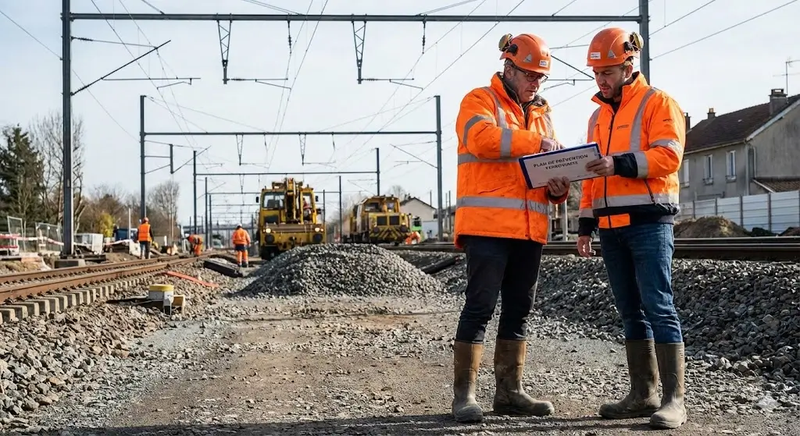

RÉGLEMENTATION 2026 — ACCÈS AUX EMPRISES FERROVIAIRES (SNCF RÉSEAU)
Publié en 2026 — Source : SNCF Réseau / Prescriptions particulières de sécurité — secufer.fr
Pourquoi une réglementation spécifique ?
L'accès aux emprises ferroviaires (voies, ballast, abords des caténaires…) est encadré par des prescriptions particulières de SNCF Réseau, gestionnaire du Réseau Ferré National (RFN). Ces règles découlent du Code du travail et des exigences opérationnelles des donneurs d'ordre ferroviaires. En 2026, ces obligations se sont renforcées sous l'effet des nouvelles réglementations de prévention des risques professionnels.
La formation SECUFER (Sécurité Ferroviaire) est devenue le standard incontournable : sans habilitation valide, il est tout simplement impossible d'accéder à certains chantiers du RFN. Elle couvre les risques de heurt, les risques électriques (caténaires), les procédures d'urgence et les consignes de déplacement dans les emprises.
Points clés de la réglementation 2026
Principales obligations réglementaires
- Évaluation des risques professionnels (Code du travail, Art. L4121-1)
- Formation et habilitations à jour avant toute prise de poste
- Plan de Prévention écrit pour interventions à risques spécifiques
- Visite Commune Préalable obligatoire avant le début des travaux
- Dispositif d'Annonce des Circulations (DAPR) ou Annonceur-Sentinelle (ASP)
- Gestion documentaire des risques importés/exportés sur le chantier
- Briefing sécurité et fiche d'émargement pour chaque intervenant

Analyse et intérêt pour mon parcours BTS SIO
Cette réglementation illustre parfaitement comment les contraintes juridiques et sécuritaires se traduisent en outils numériques. SNCF Réseau gère des systèmes d'information dédiés à la traçabilité des habilitations : suivi des formations SECUFER, validité des KH0/KB0, gestion des Plans de Prévention. En tant que technicien SIO, je peux être amené à développer ou maintenir ce type d'outil — base de données de certifications, alertes automatiques d'expiration, gestion des accès aux zones selon le niveau d'habilitation. Cette veille renforce ma compréhension du lien entre conformité réglementaire et architecture SI.